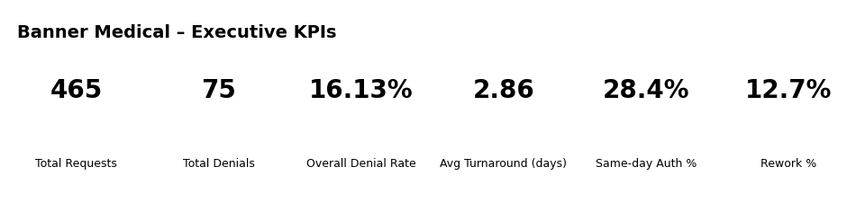

Banner Medical – Analytics Portfolio (Front-End Revenue Cycle)
This page highlights KPIs and visuals aligned to Banner Medical priorities: authorization accuracy, throughput, and operational efficiency.
Executive KPI Cards

KPIs Featured
- Same-day Auth %: Measures how often authorizations are completed same-day to reduce scheduling delays.
- Rework %: Tracks resubmissions/corrections required due to missing documentation, incorrect data, or payer follow-up.
How I’d Use This in a Role
- Identify payers/services driving rework and delayed approvals.
- Partner with clinical + UM teams to standardize documentation checklists.
- Monitor same-day completion trends and escalate bottlenecks.
Back to main portfolio